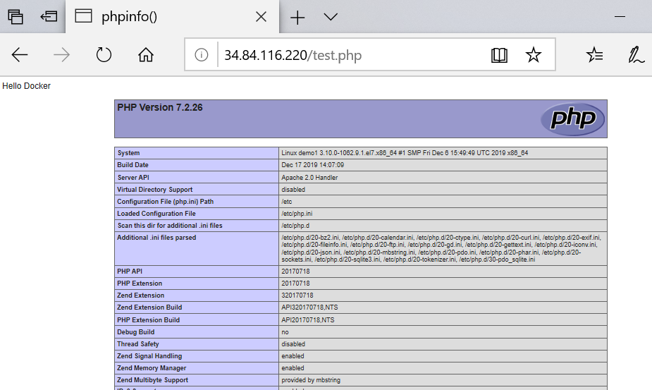
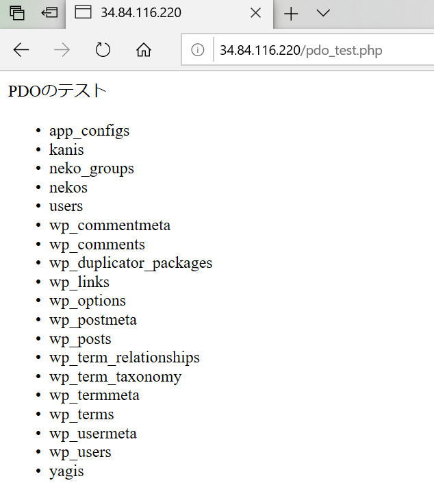

GCEでLAMPを構築する | Google Compute Engine
手順の概要
GCPのダッシュボードにてGCE（Compute Engine)の新規設定。GCEにCentOS7を設定。
CentOS7にhttpd(Apache)をインストール。
CentOS7にPHP7.2をインストール。
CentOS7にMySQL（コマンドのみ、データはGoogle Clound SQL）をインストール。
Google Clound SQLの設定。
データベース管理ツール、Adminerのインストールおよび設定。
事前準備
Windows10 バージョン1903。ssh-keygenコマンドで秘密キーと公開キーは発行済み。（公開鍵と秘密鍵について)
GCPのアカウント登録済み。（クレジットカード登録も済んでいる）
検証日：2020年1月16日～24日。
参考サイト
手順
- Google Compute Engineのダッシュボードページを開き、適当なプロジェクトを選択する。
-
左上のメニューから「Compute Engine」を選択。
-
左メニューの「VMインスタンス」をクリックすると、準備が始まるのでしばらく待つ。
-
VMインスタンスの準備が終わったら作成ボタンを押す。
-
マシン設定：前半
名前は任意を入力。リージョンは東京にする。
マシンタイプは要注意。マシンタイプにより料金が異なるので、右上の料金を見ながら適切なものを選択する。
-
マシン設定：後半
CentOS7を選択する。
HTTPトラフィックを許可にするとファイヤフォールが自動設定されるようだ。( 参考)
入力が終わったら作成ボタンを押す。
-
続いてSSHでアクセスできるようにするためSSH認証鍵の登録を行う。
公開鍵が必要になるのでssh-keygenコマンドで秘密キーと公開キーを発行しておくこと。（公開鍵と秘密鍵について)
左メニューから「メタデータ」→SSH認証鍵タブ→「SSH認証鍵を追加」と進む。
-
id_rsa.pubファイル内の全テキストをコピーし、テキストエリアに張り付け、保存ボタンを押下。
異常でSSH認証鍵の登録完了。

-
続いてグローバルIPアドレスを取得する。
左メニューの「VMインスタンス」からVMインスタンスの画面を再表示するとマシン情報が一覧表示されている。
ここの外部IPアドレスをグローバルIPアドレスとして控えておく。
ついでに接続方法が「SSH」になっていることも確認する。
-
ターミナルを開き、先ほど取得したグローバルIPアドレスを指定してSSHログインを行う。
$ SSH 34.84.XXX.220
-
SSHログインに成功したら、まずはapacheをインストール
$ sudo yum install httpd
-
apacheをインストールがインストールできたら、apacheを起動する。
$ sudo systemctl start httpd.service
「$ sudo httpd -T」でもapacheを起動できるかもしれない。
-
ブラウザから「http://34.84.XXX.220/」にURLアクセス。下記のページが表示できたら成功。
-
続いてPHPをインストール。
まずはPHPのインストールに必要なremiリポジトリをインストールする。
$ sudo rpm -Uvh http://rpms.famillecollet.com/enterprise/remi-release-7.rpm
remiのサイト -
remiリポジトリからPHPパッケージをインストールする。(今回はPHP7.2をインストール)
$ sudo yum install --enablerepo=remi,remi-php72 php php-devel php-mbstring php-pdo php-gd
-
apacheを再起動する。
$ sudo systemctl start httpd.service
-
PHPが正常にインストールされているかどうか、PHPバージョンチェックで確認する。
$ php -v
-
続いてtest.phpを作成し、サーバーにアップするための準備を行う。
ユーザー名はuserでSSHログインしているが、「/var/www/html/」はrootユーザーしかファイル作成や配置ができない状態になっている。 ユーザー名:userに「/var/www/html/」を操作できる権限を与える。
$ sudo chown user. /var/www/html/
-
適当にtest.phpを作成し、下記コマンドでtest.phpをアップロードする。
$ rsync -auvz ./test.php 34.84.XXX.220:/var/www/html/
test.php<?php echo 'Hello Docker'; phpinfo(); ?>
-
「http://34.84.XXX.220/test.php」にアクセスする。
きちんとPHPコードが実行されているようであれば成功。
 -
続いてMySQLの構築を行う。
「Google Cloud SQL」をインストールするため,CentOSにあらかじめインストールされているmariaDBをアンインストールする。
$ sudo yum remove mariadb-libs
-
CentOS 7にMySQLの公式yumリポジトリをインストールする。
$ sudo yum localinstall http://dev.mysql.com/get/mysql57-community-release-el7-7.noarch.rpm
-
MySQLをインストール。
$ sudo yum install mysql-community-server
- MySQLを起動する。 $ sudo systemctl start mysqld.service
-
続いて「Google Cloud SQL」の利用設定を行う。
GCPダッシュボードのトップページに戻り、左上のメニューから「SQL」に進む。
-
「インスタンスを作成」をクリック。
-
MySQLを選択。
-
インスタンスIDとrootパスワードに新規入力する。（MySQLにログインしたり、接続したりするときに利用することになる。）
リージョンとゾーンは、GCEのマシン設定の時と同じものを入力するとよい。（GCEのマシン設定情報は「左上メニューボタン→Computer Engine→VMインスタンス」で確認できる。）
データベースのバージョンは2020年1月時点ではバージョン5.7を選択するのが無難。
入力が終わったら作成ボタンを押す。
VMインスタンス画面のマシン設定情報、にリージョンとゾーンの情報が記載されている。
-
一覧表示されるのを少し待つ。一覧表示されたらGoogle Cloud SQLの最低限な設定は終わり。
-
続いてセキュリティ対策として、接続元のIP制限を行う。GCEのマシンのみMySQLにアクセスできるようにする。
左メニューから「SQL」→「接続」と進む。
パブリックIPとなっている箇所から「＋ネットワークを追加」をクリック。
任意の名前と、GCEのマシンのグローバルIPアドレスを入力する。
完了ボタン、保存ボタンと押す。（「保存中...」と表示され数分ほど時間がかかる）
-
確認のためSSHでMySQLにログインしてみる。
ターミナルを開き、GCEのマシンにSSHログイン。ssh 34.84.XXX.220
続いてMySQLにログイン。$ mysql -h 104.199.XXX.36 -u root -p
「mysql>」と表示されれば成功。MySQLコマンドが使える状態になっている。
以上でGoogle Cloud SQLのMySQL設定は終わり。 -
続いてテスト用のデータベース、test1を作成する。
ダッシュボードに戻り、「左メニュー→SQL→データベース」と進むとデータベースの新規作成ができる画面になる。
「データベースを作成」ボタンからデータベースを作成する。
-
mysqlのコマンドでtest1に適当にデータを投入する。（詳細は割愛）
私の場合、phpMyAdminで以前作成したサンプル用のデータをtest1.sqlとしてエクスポートし、そのtest1.sqlを先ほど作成したtest1データベースにインポートした。#mysql -h 104.199.XXX.36 -uroot -p -B test1 < /var/www/html/test1.sql
-
SELinuxのセキュリティによりPHPからDB接続できないようになっているので接続できるよう設定する。
一旦、「mysql>」の状態をexitで抜け、CentOSのコマンド入力状態に戻し、下記のコマンドを実行。# sudo setsebool httpd_can_network_connect_db on
-
PDOが動くかテストする。
pdo_test.php<?php echo 'PDOのテスト<br>'; try { $pdo = new PDO('mysql:host=104.199.XXX.36;dbname=test1;charset=utf8', 'root', 'パスワード', array(PDO::ATTR_EMULATE_PREPARES => false)); echo '<ul>'; $sql = 'show tables'; $stmt = $pdo->query($sql); foreach ($stmt as $row) { echo "<li>$row[0]</li>"; } echo '</ul>'; } catch (PDOException $e) { exit('データベース接続失敗。'.$e->getMessage()); } ?> -
rsyncコマンドでpdo_test.phpをGCE,CentOSの「/var/www/html/」ディレクトリにアップロードする。
そして「http://34.84.XXX.220/pdo_test.php」URLへアクセス。
PDOのエラーがでなければ成功。

-
データベース管理ツールのAdminerをインストールする。
AdminerはphpMyAdminと似ており、ブラウザからDB管理を行えるツール。
Adminerの本体はたた一つのphpファイル（adminer-X.X.X.php）である。
インストールとは言っても、いつものhtmlルートの好きな場所にadminer-X.X.X.php配置するだけ。
-
Adminerの公式サイトからadminer-X.X.X.phpをダウンロードする。
https://www.adminer.org/
-
rsyncコマンドでadminer-X.X.X.phpをGCE,CentOSの「/var/www/html/」ディレクトリにアップロードする。
そして「http://34.84.XXX.220/adminer-X.X.X.php」URLへアクセス。
-
sshでmysqlにログインするときと同じ情報を入力してログインする。
サーバー → 104.199.XXX.36 ユーザー名 → root パスワード → rootのパスワード データベース → test1
-
データベースの管理画面が表示されれば成功。
-
非常に長い手順であったが、とりあえず終わり。
ここまでできれば、大体のことができるはずである。